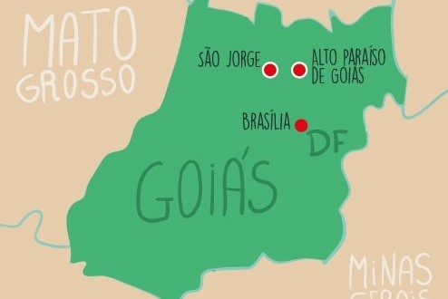

Como chegar

O que fazer

Quando ir

Pousadas

Fauna e Flora

Atrações

Uma breve introdução do Parque
Parque Nacional da chapada dos Veadeiros
O parque tem como o nome por conta do antigo povoado Veadeiros e esse povo eram chamados assim pois era onde moravam os caçadores e cães veadeiros, é um local de conservação brasileira, que esta localizada no centro-oeste no estado de Goiás, última pesquisa
em 2017 o parque tem sua total de 2.405,9 km² com 240.586,56 hectares, onde 60% do parque está localizado em Cavalcante-Go e os outros 40% em Alto Paraiso de Goiás-Go.


Um pouco da história do Parque
Essa região teve início por volta de 1750, e toda a propriedade tinha como proprietário Sr. Francisco de Almeida, na época o local tinha como nome fazendo Veadeiros, com o Seu foco principal a pecuária com o cultivo de trigo e café. Em 1892, uma comissão
de exploradores que era comandado pelo astrônomo Luís Cruls, que teve sua expedição por toda a chapada e região e sua finalidade era delimitar e fazer um levantamento de toda a área da chapada. A partir do século XX foi descoberto
a primeiro local de garimpo onde fez com que o local fique mais reconhecido por seu poder grandes mineiros escondidos, mas essa atividade começou a ser menos explorada apartir da metade do século XX ainda mais depois da criação
do parque em 11 de janeiro de 1961 com um decreto N°49.875 assinado por o presidente Juscelino Kubitschek em que toda aquela área seria uma área de preservação nacional e mundial tornando o parque nacional da chapada dos veadeiros.
Hidrografia
A Chapada dos Veadeiros é um importante centro dispersor de drenagem, com a maioria de seus rios escavando vales em forma de "V". O principal é o rio Preto, um afluente do rio Tocantins, que forma várias cachoeiras ao longo de seu curso, com destaque
para dois saltos respectivamente 80 e 120 m de altura.
Fauna e Flora
Entre as espécies da fauna que habitam o parque, cerca de 50 são classificadas como raras, endêmicas ou sob risco de extinção na área. No tocante à flora, já foram identificadas 1 476 espécies de plantas no parque, das 6 429 que existem no bioma do cerrado.
No cerrado aberto, as espécies vegetais mais proeminentes são o pau-terra-vermelho (Qualea multiflora), a cajueiro-bravo-do-campo (Curatella americana), o murici-rói-rói (Byrsonima cocaldsifolia), o caju-do-cerrado (Anacardium
humile) e as mandioqueiras (Qualea spp). Nas matas de galeria, destacam-se o Ipê-roxo (Handroanthus impetiginosus), copaíba, aroeira e tamanqueira (Stryphnodendron sp). Há ainda a ocorrência de jerivá e viuvinha (Jacaranda
brasiliana) e, nos baixios, de buriti e babaçu.[11] Entre os mamíferos, podemos destacar quatro ameaçados de extinção: o cervo-do-pantanal (Blastocerus dichotomus), o veado-campeiro (Ozotocerus bezoarticus), seu predador natural,
onça-pintada, e o maior canídeo americano, o lobo guará.[11] As aves mais destacadas a ema, o urubu-rei, e o gavião.
Economia com o Turismo
O Parque Nacional é uma das áreas mais importantes de conservação do Planalto Central do Brasil. Constitui uma das áreas-núcleo da Reserva da Biosfera do Cerrado, inserindo-se no corredor ecológico Paranã-Pirineus e na Área de Proteção Ambiental – APA
do Pouso Alto. Sua beleza cênica é conhecida internacionalmente, sendo que em 2001 a União Mundial pela Natureza - IUCN emitiu parecer favorável ao titulo de Patrimônio Mundial Natural.
Misticismo
A Chapada dos Veadeiros, especialmente na região de Alto Paraíso possui um forte turismo místico. Dentre os motivos, pode-se citar as exuberantes paisagens, a abundância de aflorações de quartzo (o que faz a chapada ser vista como um centro de concentração
de energia) e o fato de ela ser cortada pelo Paralelo 14 S, o mesmo que passa por Machu Picchu.[31][28] A ocupação mística da região começou pouco antes da criação do parque. Em 1957, chega uma missão espiritual vinda de Recife,
que funda a Fazenda Bona Espero, uma instituição filantrópica que ensina o esperanto.
Preservação do Parque
Por que preserva o parque?
Mais como já dito o parque e super importante por vários meios, para o ecossistema do cerrado para a economia logo a chapada dos veadeiros traz um publico bastante grande por ano por conta das trilhas, rios cachoeiras lagos e vistas cinematográficas que
existe no local, com isso fazendo a economia girar no local trazendo empregos para muitas famílias que moram no Alto Paraíso ou em São Jorge, empregos que podem ser desde guias turísticos, ou trabalhos em pousadas ou restaurastes
que tem no local. E importante a preservação do parque também por ele ser uns dos principais berço de nascentes de rios que podem cortar todo o estado ou pais, onde com isso trazendo água muitas das vezes que podem ser usadas
para o consumo humano. Então quando falamos de cerrado e da chapada falamos de biodiversidade de fauna e flora, falamos de economia, falamos vida porque através do cerrado e da chapada temos vidas sendo vivida, sendo elas a
vida da fauna ou da flora ou vida do próprio ser humano que se contribui bastante de todas as riquezas que podem ser aproveitadas do cerrado, por conta disso e bastante importante a preservação do cerrado e da chapada. O Parque
Nacional é uma das áreas mais importantes de conservação do Planalto Central do Brasil. Constitui uma das áreas-núcleo da Reserva da Biosfera do Cerrado, inserindo-se no corredor ecológico Paranã-Pirineus e na Área de Proteção
Ambiental – APA do Pouso Alto. Sua beleza cênica é conhecida internacion almente, sendo que em 2001 a União Mundial pela Natureza - IUCN emitiu parecer favorável ao titulo de Patrimônio Mundial Natural. O Parque apresenta relevante
importância para a conservação de amostras representativas do Cerrado do Brasil Central, especialmente do Cerrado de altitude, para a proteção das reservas hídricas da área do alto curso do rio Tocantins, bem como para a realização
de atividades de ecoturismo, recreação e educação ambiental em áreas naturais. A altitude (cerca de 1.400 m) e as diversas faces do Cerrado corroboram para explicar a grande riqueza de espécies endêmicas e raras, e faz desta
área um excelente laboratório de estudos da distribuição e adaptação de espécies. O Parque Nacional abriga diversas fitofisionomias e paisagens do Cerrado, bem como uma grande diversidade de flora e fauna, que inclui espécies
raras e ameaçadas de extinção. A alta biodiversidade da região atrai pesquisas básicas de zoologia e principalmente botânica, como aquelas que envolvem biologia, biogeografia, taxonomia, sistemática e filogenética. Atrai também
pesquisas em ecologia, que buscam compreender a relação das espécies umas com as outras e com o meio físico. Embora o Parque Nacional se encontre entre as quatro Unidades de Conservação mais pesquisadas no Bioma Cerrado, apresenta
muitas lacunas de conhecimento, sobretudo em mastofauna, anurofauna e entomofauna. Além disso, os atrativos turísticos do Parque Nacional demandam pesquisas na área de turismo, manejo, monitoramento e impactos em trilhas, ciências
sociais, geografia e planejamento urbano e ambiental.
Vídeo da Chapada Dos Veadeiros
Recuperação da área original
Recuperação da área original A área ampliada do parque em 2017, na verdade, foi uma recuperação de parte do território original da Chapada dos Veadeiros, que foi diminuído ao longo do tempo. O parque foi criado em 1961 pelo presidente Juscelino Kubitschek,
com uma área total de 625 mil hectares. Dez anos depois, em 1972, a Chapada sofreu o primeiro revés. A área foi reduzida para 171 mil hectares. Em 1981, novamente uma década depois, durante o governo militar de João Batista
Figueiredo, veio a segunda redução. O território do parque foi diminuído para 65 mil hectares, área equivalente a cerca de 10% do território inicial e que perdurou até 2017. O projeto de Delegado Waldir pretende retornar ao
patamar dos 10% do território original, atingidos durante a Ditadura Militar.
Mais uma ameaça
Em 2017, a Chapada dos Veadeiros foi alvo de uma onda de incêndios florestais que consumiu quase que totalidade do parque nacional. A vegetação ainda está em fase de recuperação e a população local se mobilizou para conter novas investidas de incêndios
criminosos, especialmente durante o período de estiagem. A proposta é vista pelos moradores como mais uma ameaça à Chapada, pois, além dos incêndios, nos últimos anos, a região tem sofrido com o avanço da monocultura, do desmatamento
do Cerrado e aumento das áreas de pastagem. Assim que a matéria foi protocolada e chegou ao conhecimento da população, iniciou-se uma levante para votar contra no espaço do cidadão, na página da Câmara dos Deputados. Até a
tarde desta terça-feira (10/8), 99% dos votos cadastrados eram totalmente contrários ao projeto. Isso equivale a 3.530 pessoas.
A importância da preservação do parque para fauna e flora
O Parque Nacional abriga diversas fitofisionomias e paisagens do Cerrado, bem como uma grande diversidade de flora e fauna, que inclui espécies raras e ameaçadas de extinção. Fauna Em termos de proteção de espécies ameaçadas de extinção, o PNCV abriga
as seguintes espécies de mamíferos: Lonchophylla dekeyseri (morcego-beija-flor), Monodelphis rubida (catita), Myrmecophaga tridactila (tamanduá-bandeira), Ozotocerus bezoarticus (veado campeiro), Chrysocyon brachyurus (lobo-guará),
Leopardus pardalis (jaguatirica), Leopardus tigrinus (gato-do-mato- pequeno), Oncifelis colocolo (gato-palheiro), Panthera onça (onça-pintada), Puma concolor (onça-parda) Speothos venaticus (cachorro-do-mato-vinagre). As duas
espécies do gênero Leopardus encontradas no Parque (jaguatirica e gato-do-mato) ocorrem em baixas densidades. Entre as espécies ameaçadas e endêmicas do Parque Nacional que merecem especial atenção temos: Lonchophylla dekeyseri
(morcego-beija-flor), Monodelphis rubida (catita), Monodelphis Kunzi (Catita-terrestre-marrom), Calomys tener (rato), Psudoryzomys simplex (rato-do-mato), Lycalopex vetulus (raposinha-do-campo).São mais de 11 mil espécies de
plantas, com cerca de 4 mil espécies endêmicas, que podem ser extintas com os efeitos do aquecimento do planeta. A biodiversidade é tão alta que até hoje os estudos ainda não são conclusivos. Entretanto, sabe-se que há mais
de 800 espécies de aves, com 29 endêmicas; 185 de répteis, com 24 endêmicas; 194 espécies de mamíferos, sendo 19 endêmicas; e 145 de anfíbios, com 45 endêmicas. Estudos mostram que há mais de 14 mil espécies de invertebrados.
Cerrado perde 60% do tamanho original
Cinco décadas depois do início da agricultura na área, o bioma perdeu nada menos que 60% do tamanho original segundo o ministério do Meio Ambiente. Por isso, em 2001 houve uma primeira tentativa de ampliação para 240 mil hectares durante o governo de
FHC quando Sarney Filho foi ministro do MMA pela primeira vez.
A agricultura brasileira no século passado e hoje
A agricultura que abriu o Cerrado no século passado era uma atividade rudimentar nos anos 70, ao mesmo tempo em que biomas como o Cerrado e Amazônia ainda eram semi-virgens. Hoje, meio século depois, a Amazônia perdeu 20% do total de sua área, com outros
20% bastante degradados. E o Cerrado, como informamos, perdeu cerca de 60% da área original.Em compensação, a agricultura brasileira atingiu níveis superlativos de produtividade, não necessitando de mais áreas para produzir
ainda mais. Ano a ano, a agricultura vem produzindo mais apenas com os ganhos em produtividade. O mesmo ainda não se pode dizer da pecuária. Parte dela evoluiu, mas ainda faltam muitas doses de ciência e tecnologia para que
a pecuária como um todo atinja a mesma produtividade da agricultura. Basta saber que 46% do rebanho bovino abatido em 2020 era oriundo da Amazônia. De qualquer modo, o Cerrado é hoje ocupado pela agricultura que, repetimos,
não necessariamente precisa mais terras para crescer. Por isso não se justifica o que está agora em jogo no Congresso Nacional: a diminuição do Parque Nacional da Chapada dos Veadeiros.
No grupo de aves, o Parque Nacional abriga algumas espécies que se encontram na lista de espécies brasileiras ameaçadas de extinção: Mergus octosetaceus (pato-mergulhão), Culicivora caudacuta (papa-moscas-do-campo), Alectrutus tricolor (Galito), Tigrisoma
fasciatum (socó-jararaca), o Coryphaspiza melanotis (socó-boi-escuro), Geobates poecilopterus (andarilho), Nothura minor (codorna), Taoniscus nanus (carapé), sendo que as três últimas espécies são endêmicas do Cerrado. Também
há registros de espécies presumivelmente ameaçadas ou prestes a serem consideradas em extinção, representadas na região por: Rhea americana (Ema), Spizaetus tyrannus (gavião-pega-macaco), Micropygia schomburgkii (maxalalagá),
Philydor dimidiatus (limpa-folha- ferrugem), Hylocryptus rectirostris (barranqueiro), Cypsnagra hirudinaceae (bandoleta), Neothraupis fasciata (tié-do-cerrado) e Porphyrospiza caerulescens (azulão-do-cerrado). Outras espécies
endêmicas para o biomas são: Amazona xanthops (papagaio-galego), Melanopareia torquata (mineirinho), Herpsilochmus longirostris (chorozinho-bicudo) Hylocryptus rectirostris (Barraqueiro) Antilophia galeata (Soldadinho) Cyanocorax
cristatellus (Gralha) Neothraupis fasciata (Tié-do-cerrado), Poospiza cinerea (capacetinho-cinza), Saltator atricollis (Batuqueiro), Porphyrospiza caerulescens (Azulão-do-cerrado) e Charitospiza eucosma (Mineirinho).
No grupo de anfíbios são registradas diversas espécies de anuros endêmicas de Cerrado, como o Proceratophrys goyana (sapo-de-chifre); as Hyla pseudopseudis e Hyla rubicundula (pererecas); Colosthetus goianus (sapo); Leptodactylus tapeti (rã); Odontophrynus
salvatori (sapo-fusquinha), Bufo ocellatus (sapo). Entre as espécies de lagartos são registrados Hoplocercus spinosus (calango-roseta), Norops meridionalis, Tropidurus oreadicus (calango), Tropidurus itambere (calango), Bachia
bresslaui e Micrablepharus atticolus (lagartinho). Para a fauna ictia são registradas para a região circundante do Parque Nacional as espécies: Prochilodus nigricans (curimatá), Leporinus friderici (piau), Hypostomus emarginatu,
Geophagus cf. surinamensis, Pseudodoras niger (abotoado) e Pimelodus blochii (mandí).
A entomofauna da região do Parque Nacional é extremamente diversa, entretanto há insuficiência de estudos atualizados sobre esse grupo. Flora Dentre as espécies de flora raras ou endêmicas presentes na região podem ser encontrados: Ilex congesta (Aquifoliaceae),
Maytenus chapadensis (Celastraceae), Calea irwinii, Eremanthus veadeiroensis, Planaltoa lychnophoroides, Trichogonia grazielae, Trichogonia prancei, Vernonia grearii e V. souzae (Compositae), Lomatozana artemisaefolia (Compositae),
Leucothoe chapadensis (Ericaceae), Paepalanthus phaeocephalus e Syngonanthus appressus var. chapadensis (Eriocaulaceae), Manihot irwinii (Euphorbiaceae), Chamaechrista altoana, Chamaecrista cavalcantina, Mimosa irwinii e M.
venatorum (Leguminosae), Hyptis paradisi e H. tagetifolia (Labiatae), Diplusodon appendiculosus (Lythraceae), Banisteriopsis irwinni e Peixotoa goiana (Malpighiaceae), Miconia irwinii e Lavoisiera ordinata (Melastomataceae),
Encyclia chapadensis (Orchidaceae), Podocarpus sellowii, P. brasiliensis (Podocarpaceae), Barbacenia andersonii e B. cylindrica (Velloziaceae) e Xyris goyazensis e X. Metallica (Xyridaceae). E algumas espécies estão ameaçadas
por super exploração, tais como Lynchnophora ericoides - arnica (Compositae) e a Myracodruon urundeuva – aroeira (Anacardiaceae), enquanto outras estão ameaçadas pela destruição de seus habitat, como as espécies de matas mesofíticas.
A lista completa de registros de fauna e flora para o Parque Nacional pode ser acessada no Plano de Manejo.
Para que você fique por dentro de todas trilhas e pontos turístico na Chapada Dos Veadeiros